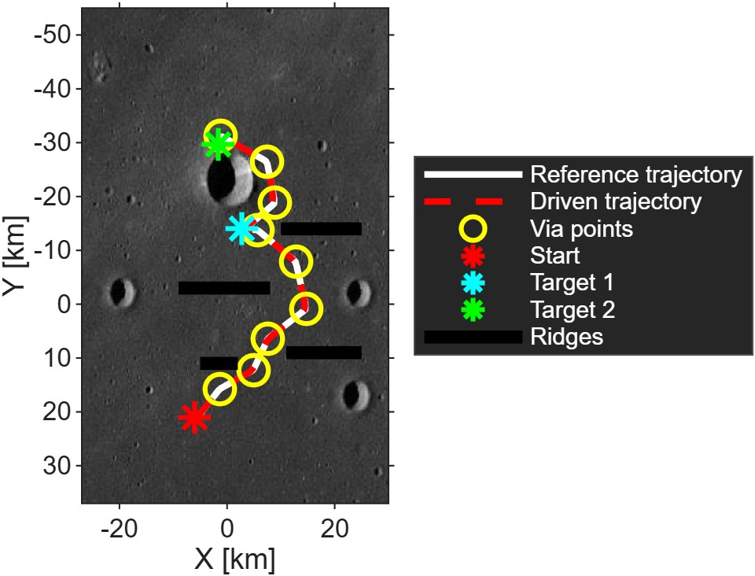
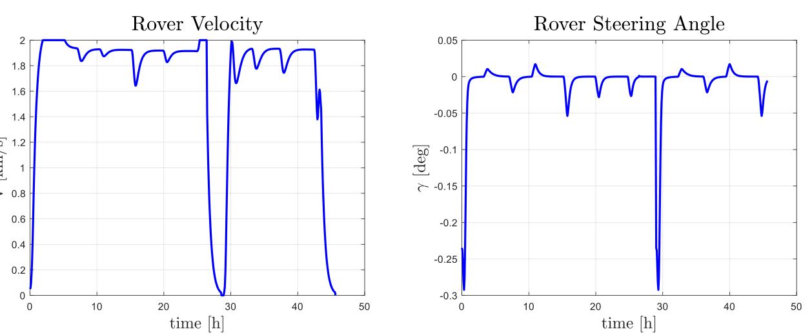
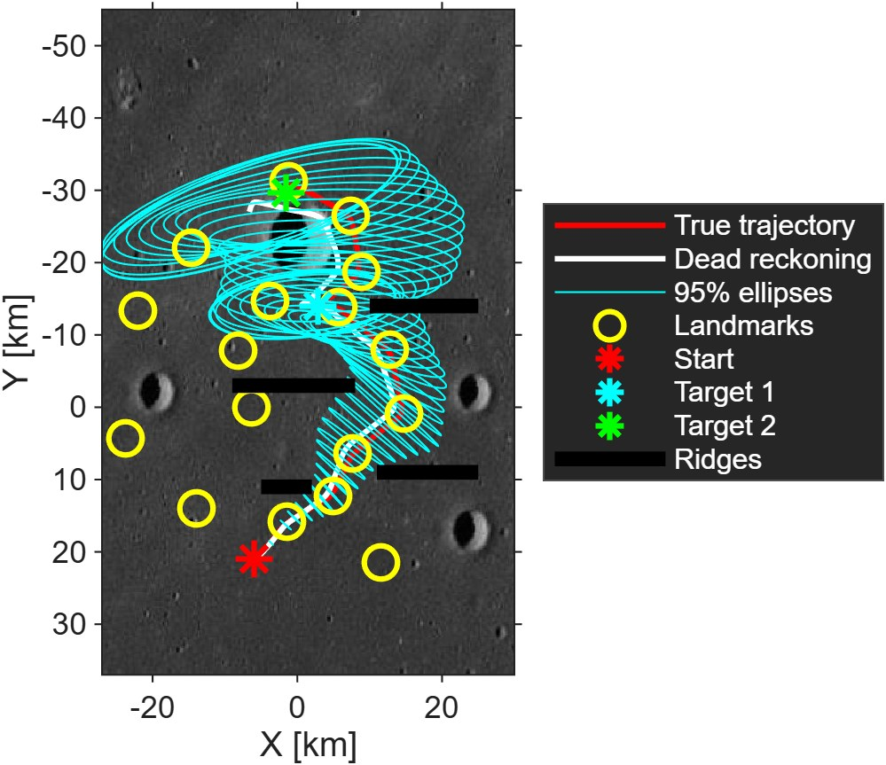
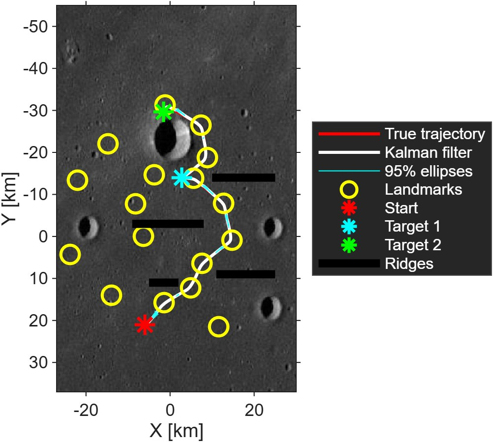
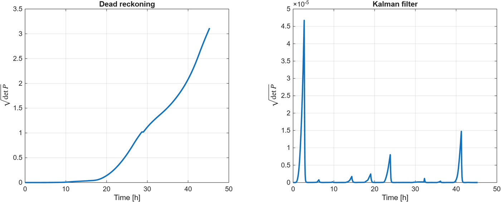
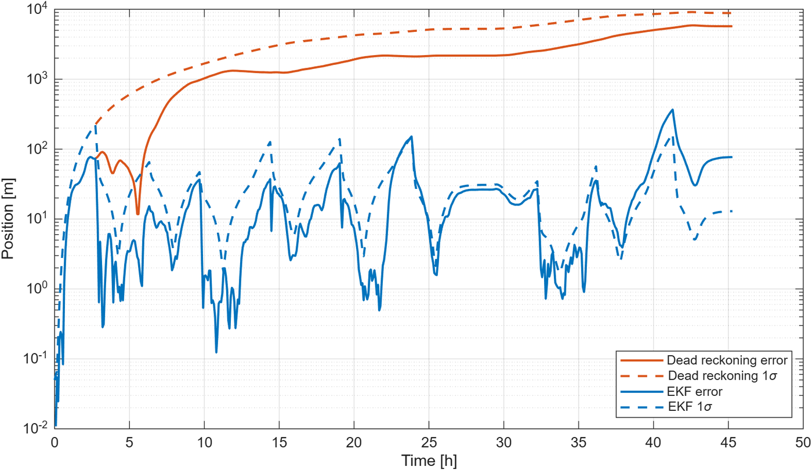
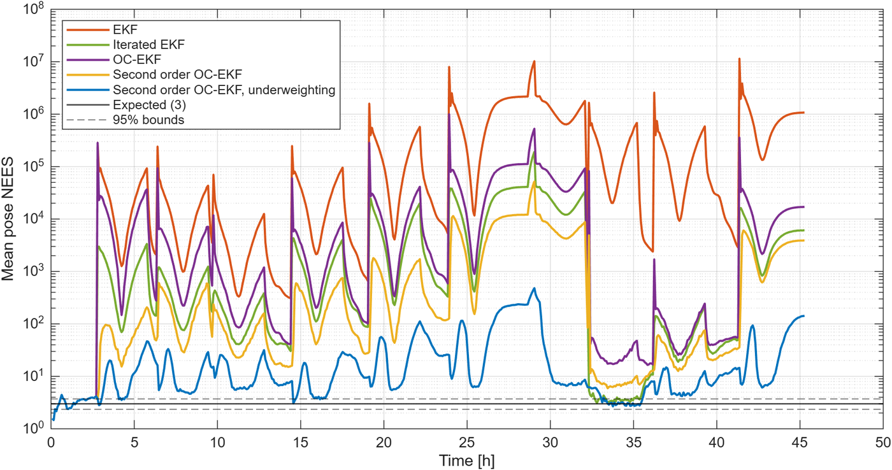

Back to ProjectsTorna a Progetti
Lunar rover: autonomous localisationRover lunare: localizzazione autonoma
Final exercise, Space Robotic Systems, Sapienza University of Rome, 2020/2021, revisited in 2026
Esercizio finale, Space Robotic Systems, Sapienza Università di Roma, 2020/2021, ripreso nel 2026
A rover on the Moon has to cross tens of kilometres between craters and ridges and know where it is along the way. In this MATLAB project I planned and controlled its path, then tested two onboard localisation systems: odometry alone, and odometry fused with a lidar that ranges known landmarks in a Kalman filter. In 2026 I rewrote the code from scratch, fixed several errors of the original version, and found that the standard extended Kalman filter is badly overconfident on this problem; the results below come from the revised code.
Un rover sulla Luna deve percorrere decine di chilometri tra crateri e creste e sapere dove si trova lungo il percorso. In questo progetto in MATLAB ho pianificato e controllato il suo percorso, poi ho testato due sistemi di localizzazione di bordo: la sola odometria, e l'odometria fusa con un lidar che misura la distanza da punti di riferimento noti in un filtro di Kalman. Nel 2026 ho riscritto il codice da zero, corretto diversi errori della versione originale, e scoperto che il filtro di Kalman esteso standard è fortemente troppo ottimista su questo problema; i risultati qui sotto vengono dal codice rivisto.
- 45.3 hto drive 76 km to the final targetper percorrere 76 km fino al target finale
- 5.7 kmfinal error with odometry aloneerrore finale con la sola odometria
- 51 mRMS error of the final Kalman filtererrore RMS del filtro di Kalman finale
- 14% → 78%errors inside the 95% ellipseerrori dentro l'ellisse al 95%
The problemIl problema
The rover starts at (−6, 21) km on a lunar map and has to reach two targets in sequence, avoiding a large crater and four ridges. It is modelled as a bicycle with a 1 m wheelbase and cannot go faster than 2 km/h, like the Soviet Lunokhod rovers. The exercise had three tasks:
Il rover parte da (−6, 21) km su una mappa lunare e deve raggiungere due target in sequenza, evitando un grande cratere e quattro creste. È modellato come un bicycle model con un interasse di 1 m e non può superare i 2 km/h, come i rover sovietici Lunokhod. L'esercizio aveva tre task:
- Plan a safe trajectory to both targets and control the rover along it.
- Reconstruct the trajectory onboard with the odometer only (dead reckoning) and judge whether it is safe.
- Reconstruct it again fusing odometry and lidar measurements in a Kalman filter, so that the path and its uncertainty ellipses avoid every hazard.
- Pianificare una traiettoria sicura verso i due target e controllare il rover lungo di essa.
- Ricostruire la traiettoria a bordo con il solo odometro (dead reckoning) e valutare se è sicura.
- Ricostruirla di nuovo fondendo odometria e misure del lidar in un filtro di Kalman, in modo che il percorso e le sue ellissi di incertezza evitino ogni ostacolo.
Trajectory planning and controlPianificazione e controllo
I built the path from via points placed on landmarks between the hazards, joined by straight segments with parabolic blends and travelled at 95% of the maximum speed. Two controllers drive the rover along it: a moving target follower, with a PI law on speed to keep 500 m behind the reference and a proportional law on steering, and a move to a point controller that takes over in the last 800 m before each target. The rover reaches the first target after 28.6 h, stops there for half an hour, and reaches the second after 45.3 h, staying 2.5 km away from every ridge.
Ho costruito il percorso a partire da punti di via posti sui punti di riferimento tra gli ostacoli, collegati da segmenti rettilinei con raccordi parabolici e percorsi al 95% della velocità massima. Due controllori guidano il rover lungo il percorso: un inseguimento di un bersaglio mobile, con una legge PI sulla velocità per restare 500 m dietro al riferimento e una legge proporzionale sullo sterzo, e un controllo verso un punto che subentra negli ultimi 800 m prima di ogni target. Il rover raggiunge il primo target dopo 28,6 h, vi sosta mezz'ora, e raggiunge il secondo dopo 45,3 h, restando a 2,5 km da ogni cresta.


Dead reckoning
Taking the driven path as the truth, I simulated odometer readings every 4.8 minutes with Gaussian noise (3 cm on distance, 0.8° on heading) and propagated the pose and its covariance step by step. The error accumulates: after 76 km the estimate is 5.7 km off, the 95% ellipses grow to several kilometres and cross the large crater and the ridges, and the square root of the covariance determinant rises steadily. Odometry alone is not safe over tens of kilometres; it is only usable over short legs from a well known position, or when corrected by external measurements such as ranges to known landmarks.
Prendendo il percorso effettivo come verità, ho simulato le letture dell'odometro ogni 4,8 minuti con rumore gaussiano (3 cm sulla distanza, 0,8° sulla direzione) e propagato passo dopo passo la posa e la sua covarianza. L'errore si accumula: dopo 76 km la stima è sbagliata di 5,7 km, le ellissi al 95% crescono fino a diversi chilometri e attraversano il grande cratere e le creste, e la radice quadrata del determinante della covarianza cresce costantemente. La sola odometria non è sicura su decine di chilometri; è utilizzabile solo su tratti brevi partendo da una posizione ben nota, oppure se corretta da misure esterne come le distanze da punti di riferimento noti.


Kalman filterFiltro di Kalman
In the third task an onboard lidar measures range and bearing (2 cm and 0.3° noise) to the closest known landmark whenever one is within 3 km. Between measurements the filter predicts with the same odometer readings as dead reckoning; when a landmark is in view, it corrects the pose and the covariance. The uncertainty now grows only on the stretches without landmarks and collapses at the next measurement: the reconstructed path stays close to the true one and, with its 95% ellipses, 2.4 km away from every ridge.
Nel terzo task un lidar di bordo misura distanza e angolo (rumore di 2 cm e 0,3°) rispetto al punto di riferimento noto più vicino, quando uno di essi si trova entro 3 km. Tra una misura e l'altra il filtro fa la predizione con le stesse letture dell'odometro del dead reckoning; quando un punto di riferimento è visibile, corregge posa e covarianza. L'incertezza ora cresce solo nei tratti senza punti di riferimento e crolla alla misura successiva: il percorso ricostruito resta vicino a quello vero e, con le sue ellissi al 95%, a 2,4 km da ogni cresta.


Filter consistencyConsistenza del filtro
A filter is useful for hazard avoidance only if its ellipses are honest. Rewriting the code, I found that the standard extended Kalman filter is not: its uncertainty collapses to about a metre at each lidar measurement while the real error stays tens of metres. Two effects add up.
Un filtro serve per evitare gli ostacoli solo se le sue ellissi sono oneste. Riscrivendo il codice, ho scoperto che il filtro di Kalman esteso standard non lo è: la sua incertezza crolla a circa un metro a ogni misura del lidar, mentre l'errore vero resta di decine di metri. Si sommano due effetti.
- Unobservability. The lidar never sees two landmarks at once. Rotating the whole pose about the visible landmark leaves range and bearing unchanged, so that direction is unobservable, but the standard EKF gains spurious information along it. The observability constrained EKF (Huang, Mourikis and Roumeliotis) builds the propagation Jacobian so that this direction is preserved.
- Nonlinearity. After a stretch without landmarks the position is uncertain by hundreds of metres, while the range is accurate to 2 cm; over that spread the measurement model is metres away from linear. A second order filter accounts for its curvature, and measurement underweighting, a technique from Space Shuttle and Orion navigation, keeps the first measurement after a gap from being trusted too much.
- Inosservabilità. Il lidar non vede mai due punti di riferimento insieme. Ruotando l'intera posa attorno al punto visibile, distanza e angolo non cambiano, quindi quella direzione è inosservabile, ma l'EKF standard vi accumula informazione spuria. L'EKF con vincolo di osservabilità (Huang, Mourikis e Roumeliotis) costruisce lo jacobiano della propagazione in modo da preservare questa direzione.
- Non linearità. Dopo un tratto senza punti di riferimento la posizione è incerta di centinaia di metri, mentre la distanza è precisa a 2 cm; su quell'intervallo il modello di misura si discosta di metri da quello lineare. Un filtro del secondo ordine tiene conto della sua curvatura, e l'underweighting delle misure, una tecnica nata per la navigazione dello Space Shuttle e di Orion, evita che la prima misura dopo un tratto al buio sia presa troppo alla lettera.
Over 50 Monte Carlo runs, the share of errors inside the 95% ellipse rises from 14% with the standard EKF to 78% with the second order, observability constrained EKF with underweighting, its median normalised error matches the expected value, and the RMS position error drops from 179 m to 51 m. The remaining outliers, right after the longest gaps, are the starting point for a paper on this problem.
Su 50 simulazioni Monte Carlo, la quota di errori dentro l'ellisse al 95% sale dal 14% dell'EKF standard al 78% dell'EKF del secondo ordine con vincolo di osservabilità e underweighting, il suo errore normalizzato mediano coincide con il valore atteso, e l'errore RMS di posizione scende da 179 m a 51 m. I casi anomali rimasti, subito dopo i tratti al buio più lunghi, sono il punto di partenza per un articolo su questo problema.

CodeCodice
The MATLAB code, with the Monte Carlo analysis of the five filters, is on GitHub. It needs base MATLAB only.
Il codice MATLAB, con l'analisi Monte Carlo dei cinque filtri, è su GitHub. Richiede solo MATLAB di base.